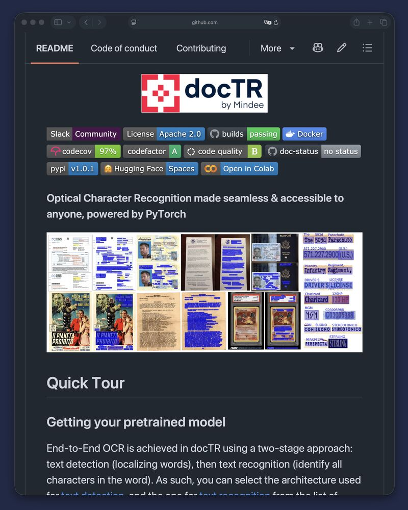

Filed 14 Aug 2026 · Published 13 Aug 2026
LinkedIn intake — docTR confidence-aware local OCR
Half a batch of scans comes out clean, a few come out garbage, and the text never says which is which.

What the post claims
The post presents docTR (Document Text Recognition) as a local, deep-learning OCR library. It claims a detection-and-recognition workflow that returns each word with a box and confidence score, hOCR, Markdown, or JSON output, and a human-review path for low-scoring pages before indexing. It also describes the project as Apache-2.0 licensed and cites roughly 6.2k GitHub stars. These are author/project claims until corroborated.
Primary-source quick pass
The repository URL exposed in the author comment was fetched directly by ordinary network request, not clicked in LinkedIn: https://github.com/mindee/doctr. At the observed default branch on 2026-08-14, the public repository identifies docTR as PyTorch-based OCR, states that maintenance has moved from Mindee to t2k GmbH, carries Apache-2.0 license metadata, and documents PDF/image inputs, two-stage text detection and recognition, selectable model architectures, layout detection, rotated-box options, nested page/block/line/word output, and JSON export.
This supports the project's existence, documented architecture, local deployment possibility, Apache-2.0 repository license, JSON export, and page/word geometry/confidence-related data structures. It does not independently substantiate the post's hOCR or Markdown-output wording, star count beyond the observation time, calibrated confidence, page-level human-routing outcomes, accuracy on complex layouts, or production suitability. No package installation, model download, source build, benchmark, or independent evaluation was attempted.
Book relevance
High relevance for chapters on document ingestion as infrastructure, private/local AI systems, and trustworthy agent pipelines.
Candidate claim/example: confidence-aware OCR is more useful than a binary extraction claim when it preserves geometry and uncertainty and sends low-confidence material to a review lane. The important system design is not merely local OCR: it is provenance, page-level quality signals, layout-aware validation, routing rules, sampled QA, and a fallback path for difficult documents.
Hermione relevance
High relevance as a design pattern rather than an immediate adoption recommendation. Hermione can use local OCR behind a narrow adapter for sensitive or cost-constrained document intake, but should retain original-page provenance, inspect word/layout confidence rather than treating it as calibrated truth, validate schemas/tables, route ambiguous pages for review, and fall back to a stronger extractor where needed.
Evidence strength and limitations
Evidence strength: moderate for the public repository, Apache-2.0 repository license, documented PyTorch-based detection/recognition architecture, PDF/image inputs, layout support, word/page structure, and JSON export; discovery-only for the LinkedIn post's hOCR/Markdown wording, exact popularity at later times, quality, confidence calibration, human-review benefits, complex-layout handling, and production performance.
- LinkedIn, visible comments, and attached media are social/project-authored evidence rather than independent validation.
- The source review was read-only; no installation, model download, build, test, benchmark, package verification, or accuracy replication was performed.
- A visible practitioner comment specifically cautions that multi-block page ordering can require custom rules.
- Confidence scores need empirical calibration and page/layout-level validation; they are not by themselves evidence of correct reading order, table reconstruction, or factual accuracy.
- Visible comments are limited to the captured set; replies and any later comments were not expanded.